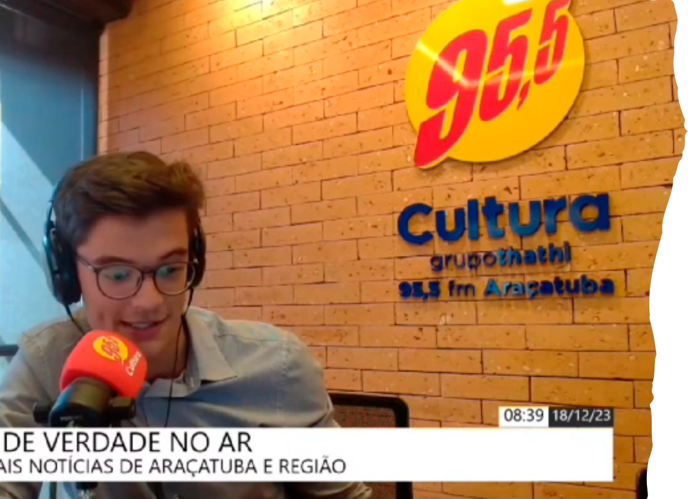
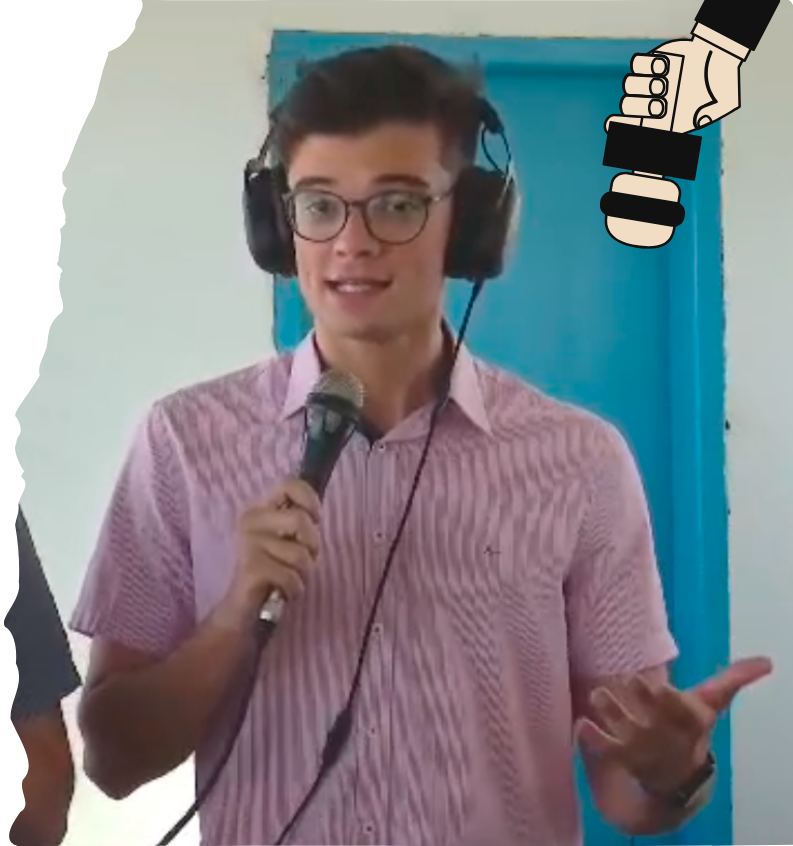

SBT Interior:
Meus primeiros trabalhos como jornalista foi ainda durante meu estágio no SBT Interior, quando precisei substituir alguns repórteres em algumas ocasiões. Fui contratado ao fim do estágio e hoje atuo como videorrepórter.
VIDEO
Birigui-SP inaugurou um serviço de atendimento para pacientes com sintomas de dengue devido ao aumento alarmante de casos. A cidade já registrou mais de 1000 casos e uma morte confirmada este ano, gerando preocupação na administração do município.
A cerimônia do sino no Hospital do Amor simboliza a vitória dos pacientes que completaram o tratamento contra o câncer, trazendo esperança e emoção. Este ritual é uma celebração da vida após a luta contra a doença.
O tratamento humanizado do câncer é essencial para o bem-estar dos pacientes, proporcionando apoio emocional e uma atmosfera de amor durante a recuperação. Isso ajuda a enfrentar os desafios da doença de maneira mais leve e esperançosa.
VIDEO
VIDEO
A UNESP de Araçatuba está promovendo uma campanha de prevenção ao câncer de boca, em comemoração aos 70 anos da FOA e à Semana Nacional de Prevenção. A ação inclui avaliação bucal, orientações sobre fatores de risco e cadastro dos participantes.
Uma campanha de exames bucais gratuitos está acontecendo em Araçatuba, com o objetivo de detectar lesões importantes, como câncer de boca, de forma precoce e eficaz. Qualquer pessoa pode participar, sem necessidade de inscrição prévia, das 8h às 16h.
A cerimônia do sino no Hospital do Amor simboliza a vitória dos pacientes que completaram o tratamento contra o câncer, trazendo esperança e emoção. Este ritual é uma celebração da vida após a luta contra a doença.
O tratamento humanizado do câncer é essencial para o bem-estar dos pacientes, proporcionando apoio emocional e uma atmosfera de amor durante a recuperação. Isso ajuda a enfrentar os desafios da doença de maneira mais leve e esperançosa.
VIDEO
SBT Nacional:
Um dos momentos mais marcantes da minha trajetória foi quando tive a oportunidade de aparecer em rede nacional. A reportagem que produzi ganhou destaque e foi exibida em um dos telejornais do SBT, ampliando meu alcance e reconhecimento profissional. Foi uma experiência única ver meu trabalho sendo compartilhado para todo o país, algo que reforçou ainda mais minha paixão pelo jornalismo e meu compromisso em levar informação de qualidade ao público.
VIDEO
Várias matérias que fiz já foram exibidas em âmbito nacional no SBT de São Paulo. Veja acima uma delas, que foi exibida no programa SBT Agro. (Reportagem no minuto 21:25)
Além de reportagens gravadas, já entrei ao vivo para todo o Brasil no Primeiro Impacto, um dos principais jornais do SBT, para dar os detalhes sobre o assassinato de um casal em Birigui.
VIDEO

Cultura FM 95,5
Trabalhei por quase um ano na rádio de maior audiência da cidade de Araçatuba. Ao longo desse tempo, desempenhei várias funções, como repórter, operador de som e apresentador de programas jornalísticos
VIDEO
A reportagem destaca a operação de Ano Novo da Polícia Rodoviária, que visou aumentar a segurança nas rodovias durante o feriado. O balanço, divulgado em 2 de janeiro, mostrou 9 acidentes na região de Araçatuba, com 4 resultando em vítimas, sendo 6 em estado grave. Também foram registrados casos de motoristas embriagados, recusas ao teste do bafômetro e infrações como falta de cinto de segurança e excesso de velocidade.
O vídeo apresenta o retorno do programa de jornalismo com Marcos Serelepe, que se prepara para uma transmissão ao vivo da Câmara Municipal de Araçatuba. A transmissão, marcada para às 9 horas da manhã, cobrirá uma sessão extraordinária, gerando expectativa sobre o desempenho de uma convidada mencionada no contexto.
VIDEO
Federação Paulista de Futebol:
Por mais de um ano, fui comentarista esportivo oficial da Federação Paulista de Futebol durante os jogos da Associação Esportiva Araçatuba no Paulistão 2024 e 2025.

VIDEO
O vídeo aborda a importância de um jogo para o mauaense, que precisa vencer para garantir uma vaga nas quartas de final do Paulistão 2024 sub-23, segunda divisão. A equipe AIA já está classificada e busca a primeira colocação, que oferece a vantagem do empate na próxima fase. O confronto ocorrerá no Estádio Ademar de Barros, com expectativas de um jogo emocionante e com muitos gols.